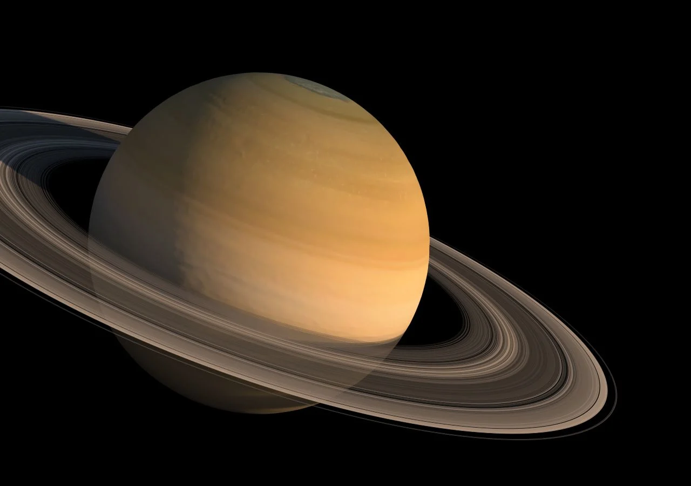
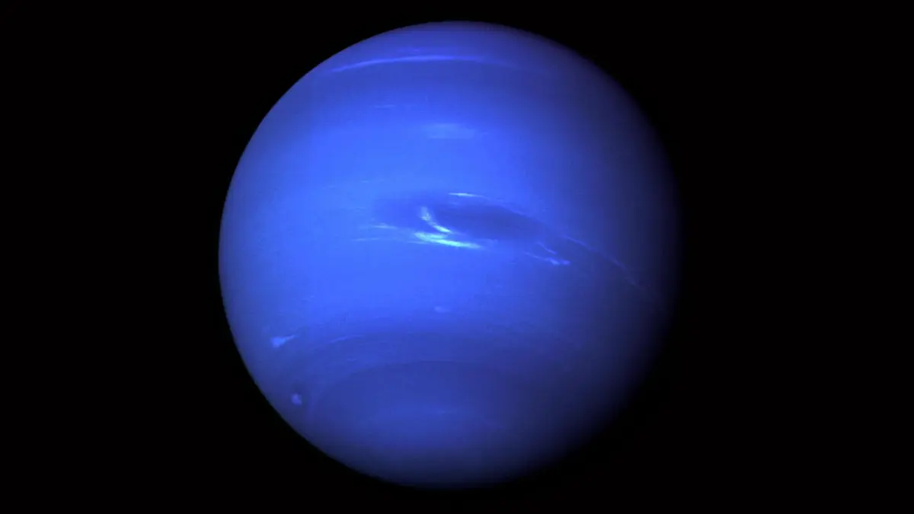

Jupiter
Es el planeta mas grande del sistema solar, es denominado planeta exterior, y es un gigantesco gaseoso al igual que Saturno.
.

Saturno
Es un planeta que posee grandes y brillantes anillos de asteroides visibles desde la tierra, los cuales poseen particulas que viajan a una velocidad 15 veces mayor a la de una bala.
.
.

Neptuno
Es el ultimo planeta del sistema solar. El mismo se encuentra dentro de la clasificacion grandes helados dentro de nuestro sistema solar. Como dato curioso, el mismo posee los vientos mas fuertes dentro del sistema solar.